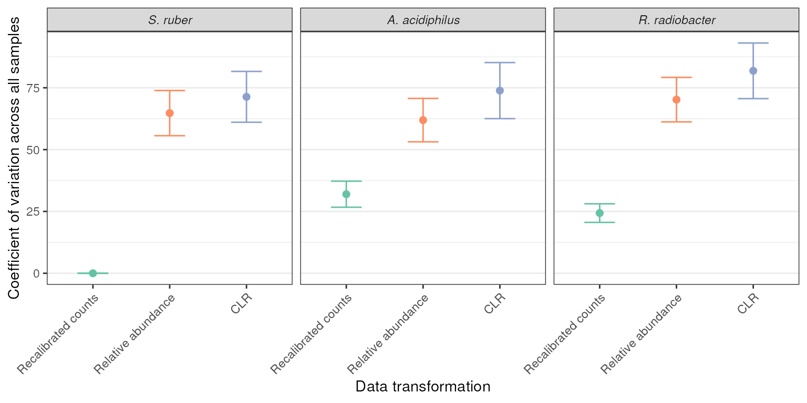

vignettes/articles/Stammler_2016_16S_spikein.Rmd
Stammler_2016_16S_spikein.Rmd
library(MicrobiomeBenchmarkDataAnalyses)
library(MicrobiomeBenchmarkData)
library(dplyr)
library(tibble)
library(tidyr)
library(biobroom)
library(ggplot2)
library(purrr)The objective of this vignette is to compare the coefficient of variation (CV) of the three spike-in bacteria in the Stammler_2016_16S_spikein dataset using relative abundance (TSS) and centered-log-ratio transformation (CLR). However, since CLR is log transformed and TSS is not, a geometric mean normalization (GMN) method will be used instead of CLR.
S. ruber will be used for re-calibrating the abundance data (counts). This is referred to as SCML. The data will also be normalized with TSS (TSS) or GMN (GMN). The CV of the abundance data of the three spike-in bacteria across samples using these two normalization methods will be calculated and compared.
tse <- getBenchmarkData('Stammler_2016_16S_spikein', dryrun = FALSE)[[1]]
spk_bac <- c(
`S. ruber` = 'AF323500XXXX',
`R. radiobacter` = 'AB247615XXXX',
`A. acidiphilus` = 'AB076660XXXX'
)
counts <- assay(tse, 'counts')
s_ruber <- counts[spk_bac['S. ruber'], ]
size_factor <- s_ruber/mean(s_ruber)
SCML_data <- counts
for(i in seq(ncol(SCML_data))){
SCML_data[,i] <- round(SCML_data[,i] / size_factor[i])
}
assay(tse, 'SCML') <- SCML_data
spk_bac_tse <- tse[spk_bac,]
rownames(spk_bac_tse) <- names(spk_bac)
spk_bac_tse
#> class: TreeSummarizedExperiment
#> dim: 3 17
#> metadata(0):
#> assays(4): counts SCML TSS GMN
#> rownames(3): S. ruber R. radiobacter A. acidiphilus
#> rowData names(1): taxonomy
#> colnames(17): MID26 MID27 ... MID42 MID43
#> colData names(12): dataset subject_id ... country description
#> reducedDimNames(0):
#> mainExpName: NULL
#> altExpNames(0):
#> rowLinks: NULL
#> rowTree: NULL
#> colLinks: NULL
#> colTree: NULL
data <- spk_bac_tse |>
assays() |>
names() |>
map({
~ tidy.RangedSummarizedExperiment(spk_bac_tse, assay = .x) |>
magrittr::set_colnames(c("taxon", "sample", .x))
}) |>
reduce(.f = \(.x, .y) left_join(.x, .y, by = c("taxon", "sample")))
DT::datatable(data, filter = 'top')
get_cv <- function(x) {
cv <- function(x, n) { sd(x[n]) / mean(x[n]) * 100 }
boot::boot(x, cv, R = 1000) |>
broom::tidy() |>
dplyr::rename(cv = statistic)
}
cv_res <- data %>%
group_by(taxon) %>%
summarize(across(.cols = counts:last_col(), .fns = get_cv)) %>%
pivot_longer(
cols = 2:last_col(), names_to = 'norm', values_to = 'cv_res'
) %>%
unnest(cols = 'cv_res')
DT::datatable(cv_res, filter = 'top') Table in wider format:
cv_res |>
rename(
Species = taxon, `Normalization method` = norm,
CV = cv, SE = std.error
) |>
filter(`Normalization method` %in% c("GMN", "TSS")) |>
select(-bias) |>
mutate(
CV = round(CV, 1), SE = round(SE, 1)
) |>
mutate(
`Normalization method` = ifelse(
test = `Normalization method` == "TSS",
yes = "Relative abundance",
no = `Normalization method`
)
) |>
DT::datatable(
extensions = 'Buttons',,
filter = "top",
options = list(
dom = 'Bfrtip',
buttons = list(
list(
extend = 'copy',
text = 'Copy '
)
)
)
)
cv_res |>
filter(norm != 'counts') |>
mutate(
norm = factor(norm, levels = c(
'counts', 'SCML', 'TSS', 'GMN'
)
)
) %>%
mutate(taxon = forcats::fct_relevel(taxon, 'S. ruber')) |>
ggplot(aes(reorder(norm, cv), cv)) +
geom_point(aes(color = norm), size = 2) +
geom_errorbar(
aes(ymin = cv - std.error, ymax = cv + std.error, color = norm),
width = 0.4, size = 0.5
) +
scale_color_brewer(type = 'qual', palette = 'Set2') +
facet_wrap(~taxon) +
labs(
y = 'Coefficient of variation across all samples',
x = 'Data transformation'
) +
theme_bw() +
theme(
# axis.text.x = element_text(angle = 45, hjust = 1),
panel.grid.major.x = element_blank(),
strip.text = element_text(face = 'italic'),
legend.position = 'none'
)
#> Warning: Using `size` aesthetic for lines was deprecated in ggplot2 3.4.0.
#> ℹ Please use `linewidth` instead.
#> This warning is displayed once every 8 hours.
#> Call `lifecycle::last_lifecycle_warnings()` to see where this warning was
#> generated.
TSS normalizaion has lower CV values than GMN. This could indicate that it introduces less bias than GMN, which is related to CLR.
sessionInfo()
#> R version 4.4.1 (2024-06-14)
#> Platform: x86_64-pc-linux-gnu
#> Running under: Ubuntu 22.04.4 LTS
#>
#> Matrix products: default
#> BLAS: /usr/lib/x86_64-linux-gnu/openblas-pthread/libblas.so.3
#> LAPACK: /usr/lib/x86_64-linux-gnu/openblas-pthread/libopenblasp-r0.3.20.so; LAPACK version 3.10.0
#>
#> locale:
#> [1] LC_CTYPE=en_US.UTF-8 LC_NUMERIC=C
#> [3] LC_TIME=en_US.UTF-8 LC_COLLATE=en_US.UTF-8
#> [5] LC_MONETARY=en_US.UTF-8 LC_MESSAGES=en_US.UTF-8
#> [7] LC_PAPER=en_US.UTF-8 LC_NAME=C
#> [9] LC_ADDRESS=C LC_TELEPHONE=C
#> [11] LC_MEASUREMENT=en_US.UTF-8 LC_IDENTIFICATION=C
#>
#> time zone: Etc/UTC
#> tzcode source: system (glibc)
#>
#> attached base packages:
#> [1] stats4 stats graphics grDevices utils datasets methods
#> [8] base
#>
#> other attached packages:
#> [1] purrr_1.0.2
#> [2] ggplot2_3.5.1
#> [3] biobroom_1.36.0
#> [4] broom_1.0.6
#> [5] tidyr_1.3.1
#> [6] tibble_3.2.1
#> [7] dplyr_1.1.4
#> [8] MicrobiomeBenchmarkData_1.6.0
#> [9] TreeSummarizedExperiment_2.12.0
#> [10] Biostrings_2.72.1
#> [11] XVector_0.44.0
#> [12] SingleCellExperiment_1.26.0
#> [13] SummarizedExperiment_1.34.0
#> [14] Biobase_2.64.0
#> [15] GenomicRanges_1.56.1
#> [16] GenomeInfoDb_1.40.1
#> [17] IRanges_2.38.1
#> [18] S4Vectors_0.42.1
#> [19] BiocGenerics_0.50.0
#> [20] MatrixGenerics_1.16.0
#> [21] matrixStats_1.3.0
#> [22] MicrobiomeBenchmarkDataAnalyses_0.99.11
#>
#> loaded via a namespace (and not attached):
#> [1] DBI_1.2.3 sandwich_3.1-0 rlang_1.1.4
#> [4] magrittr_2.0.3 multcomp_1.4-25 compiler_4.4.1
#> [7] RSQLite_2.3.7 systemfonts_1.1.0 vctrs_0.6.5
#> [10] pkgconfig_2.0.3 crayon_1.5.3 fastmap_1.2.0
#> [13] backports_1.5.0 dbplyr_2.5.0 labeling_0.4.3
#> [16] utf8_1.2.4 rmarkdown_2.27 UCSC.utils_1.0.0
#> [19] ragg_1.3.2 bit_4.0.5 xfun_0.45
#> [22] modeltools_0.2-23 zlibbioc_1.50.0 cachem_1.1.0
#> [25] jsonlite_1.8.8 blob_1.2.4 highr_0.11
#> [28] DelayedArray_0.30.1 BiocParallel_1.38.0 parallel_4.4.1
#> [31] R6_2.5.1 RColorBrewer_1.1-3 coin_1.4-3
#> [34] bslib_0.7.0 boot_1.3-30 jquerylib_0.1.4
#> [37] Rcpp_1.0.12 knitr_1.48 zoo_1.8-12
#> [40] Matrix_1.7-0 splines_4.4.1 tidyselect_1.2.1
#> [43] abind_1.4-5 yaml_2.3.9 codetools_0.2-20
#> [46] curl_5.2.1 lattice_0.22-6 treeio_1.28.0
#> [49] withr_3.0.0 evaluate_0.24.0 desc_1.4.3
#> [52] survival_3.7-0 BiocFileCache_2.12.0 pillar_1.9.0
#> [55] filelock_1.0.3 DT_0.33 generics_0.1.3
#> [58] munsell_0.5.1 scales_1.3.0 tidytree_0.4.6
#> [61] glue_1.7.0 lazyeval_0.2.2 tools_4.4.1
#> [64] forcats_1.0.0 fs_1.6.4 mvtnorm_1.2-5
#> [67] grid_4.4.1 ape_5.8 crosstalk_1.2.1
#> [70] libcoin_1.0-10 colorspace_2.1-0 nlme_3.1-165
#> [73] GenomeInfoDbData_1.2.12 cli_3.6.3 textshaping_0.4.0
#> [76] fansi_1.0.6 S4Arrays_1.4.1 gtable_0.3.5
#> [79] yulab.utils_0.1.4 sass_0.4.9 digest_0.6.36
#> [82] SparseArray_1.4.8 TH.data_1.1-2 farver_2.1.2
#> [85] htmlwidgets_1.6.4 memoise_2.0.1 htmltools_0.5.8.1
#> [88] pkgdown_2.1.0 lifecycle_1.0.4 httr_1.4.7
#> [91] bit64_4.0.5 MASS_7.3-61